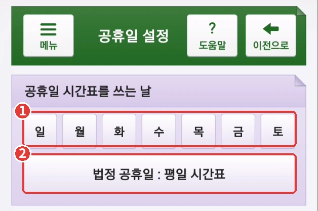

공휴일 설정
메뉴 → 설정 → 공휴일 설정
공휴일 설정

① 켠 요일은 공휴일 시간표, 끈 요일은 평일 시간표로 다닙니다.
② 법정 공휴일에 어느 시간표로 다닐지 정합니다.
자세한 설명
켠 요일은 공휴일 시간표, 끈 요일은 평일 시간표를 씁니다.
토요일에 평일처럼 다니면 토요일을 끄십시오.
법정 공휴일에 평일 시간표로 다니면 법정 공휴일을 끄십시오.
날 하나만 다를 때는 달력에서 그 날만 바꾸십시오.
새 시간표를 기본 노선으로 넣으면 공휴일 설정을 저절로 맞춥니다. 공휴일 시간표가 없는 노선은 모두 끄고(모든 날 평일 시간표), 공휴일 시간표가 있는 노선은 토·일요일과 법정 공휴일을 켭니다.
공휴일 시간표가 있는 노선을 넣으면 첫 화면 맨 위에 '공휴일 설정을 확인하세요' 빨간 띠가 뜹니다. 띠를 눌러 이 화면에서 회사에 맞는지 보고 나가면 띠가 사라집니다.
달력에서 날짜마다 손으로 바꿔 둔 평일·공휴일은 그대로 둡니다.
다른 도움말 보기